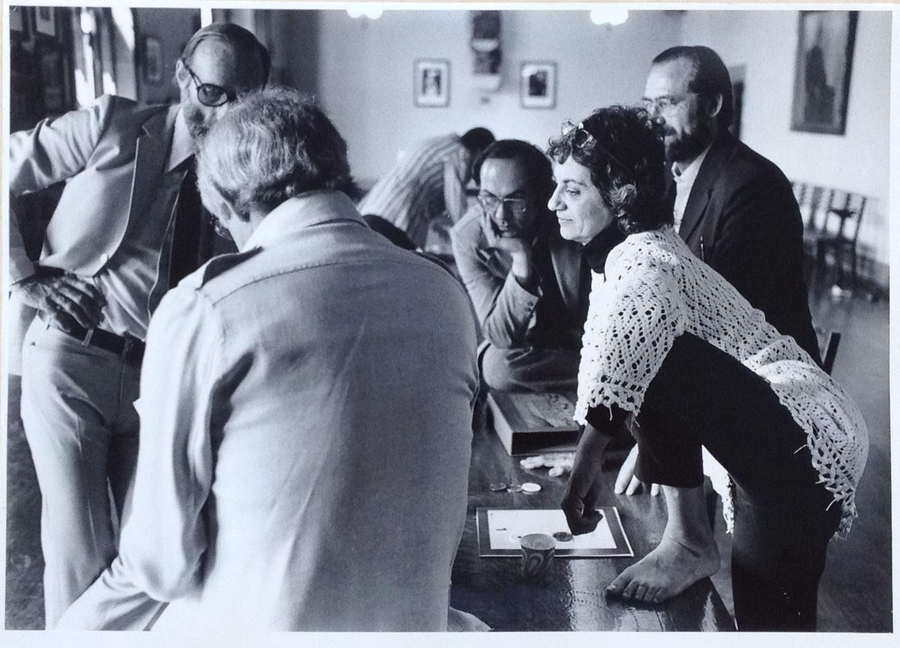

The tribute also coincided with the release of Muriel Cooper, by David Reinfurt and Robert Wiesenberger. It’s the first publication to benefit from the Press’s newly established Muriel Cooper Publication Fund, established to support innovative publications in the fields of art, design, architecture, and visual culture. During the tribute, oft-repeated phrases — such as “an architect of information” and “simply a great person” — painted a portrait of a brilliant designer and educator with a larger-than-life personality. In his welcome, Lab co-founder and director emeritus Nicholas Negroponte recalled Cooper “as one of our most colorful and important faculty members. I knew her since the early 1960s, and she had an enormous influence on me.”
